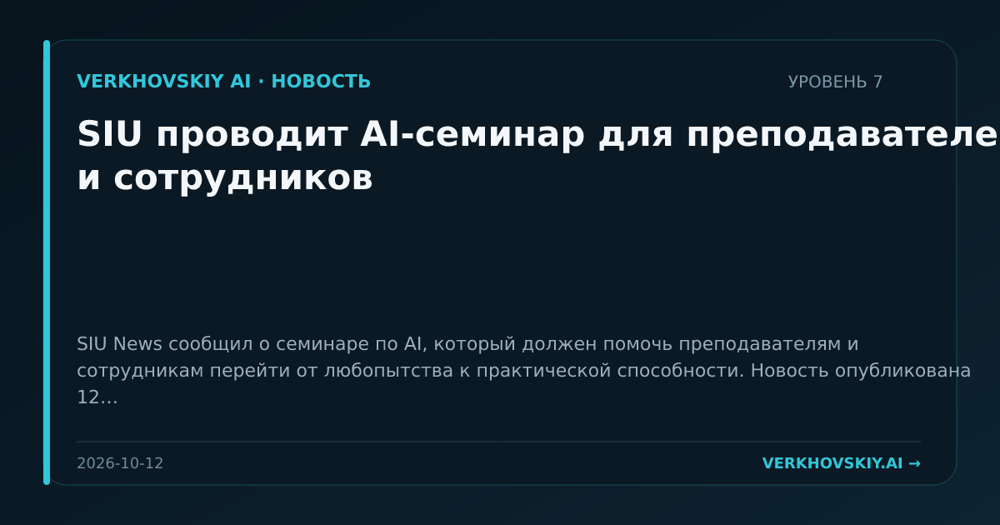

SIU проводит AI-семинар для преподавателей и сотрудников
SIU News сообщил о семинаре по AI, который должен помочь преподавателям и сотрудникам перейти от любопытства к практической способности. Новость опубликована 12 октября. Почему это важно: Университеты переводят AI-грамотность в массовую служебную компетенцию, а не оставляют ее отдельным исследовательским группам. Это меняет внутреннее разделение труда в образовательных организациях.